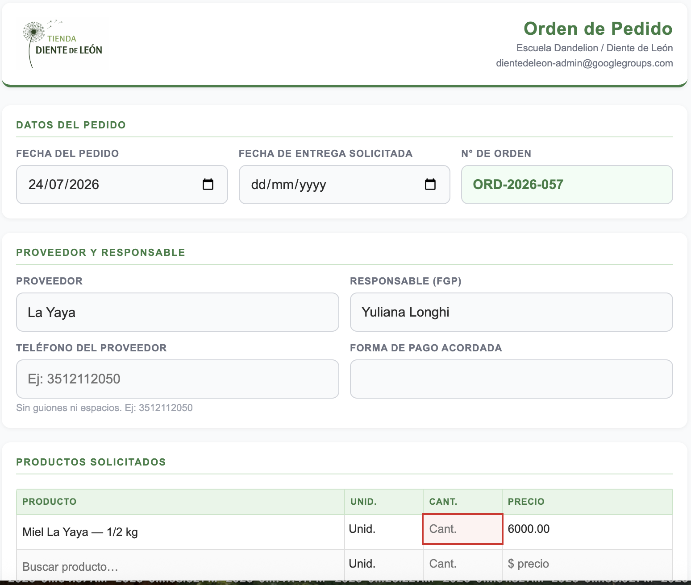
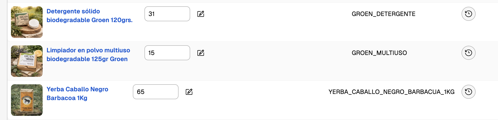

🗂️ Índice de Proyectos
La Comisión de Recursos agrupa todos los proyectos de la Escuela Dandelion orientados a la recaudación de fondos. Cada proyecto recauda de manera diferente, pero todos comparten el mismo destino: los fondos generados se donan a la escuela para sostener su funcionamiento y crecimiento.
🤝 SEF — SER Económico Fraterno
SEF es un movimiento con el propósito de construir una economía al servicio de las personas y comunidades. Desarrolla una red donde comercios y proveedores de la comunidad ofrecen sus productos y servicios, y por cada operación concretada con otro usuario de la plataforma, realizan una donación a la Escuela Waldorf Dandelion —equivalente a un porcentaje libremente definido por el proveedor.
En el contexto de la Escuela, SEF fue el primer impulso para reunir fondos a través del consumo consciente y la fraternidad económica. Opera dentro de la Comisión de Recursos junto con Diente de León.
Misión
Propiciar un ambiente para la transformación económica y social, promoviendo como fin último el bien de las personas. SEF organiza herramientas que faciliten la vivencia económico-social sobre la base de la fraternidad como pilar, promoviendo el consumo local e intracomunitario, la generación de trabajo y la formación de consciencia ambiental y social del prosumidor.
Visión
Una economía global fraterna, justa y sustentable.
Filosofía
En el ámbito económico, todos somos prosumidores (proveedores y consumidores). La conciencia con la que proveemos y consumimos impacta en todos los demás miembros de la sociedad a través de una red que alcanza a la totalidad de la humanidad.
SEF propone entrar en acción para promover una economía orientada al Bien Común fomentando valores como la confianza, la cooperación, la fraternidad, la honestidad, la responsabilidad y la sostenibilidad ecológica.
"Votamos cada cierto tiempo, pero compramos todos los días." — Joan Antoni Melé
Objetivos
- Generar y promover redes de prosumidores para el desarrollo de actividades económicas bajo principios de consumo consciente y economía fraterna
- Revalorizar el concepto de comunidad en los intercambios de bienes y servicios
- Generar herramientas de concientización sobre el impacto del consumo en sus aspectos económico, social y ambiental
- Promover el consumo local y de cercanía
- Fomentar los principios de la economía circular
- Acompañar la transición cultural en valores hacia el triple impacto: económico, social y ambiental
Cómo participar
El flujo para un prosumidor es simple:
Crear una cuenta en proyectosef.com. Podés indicar el alumno/a al cual ayudar con las donaciones generadas por tus consumos.
Consumir productos/servicios de proveedores SEF, o dar de alta tus propios productos como prosumidor desde "Mi cuenta", definiendo el % que donarás por cada operación.
Registrar la operación en la plataforma. Ese acto activa la donación a la Escuela Dandelion por el porcentaje acordado.
Pendientes — Rediseño SEF
| Área | Descripción | Estado |
|---|---|---|
| Sitio web | Rediseño completo de proyectosef.com — UI moderna, catálogo actualizado, proceso de informe simplificado | Pendiente |
| Proceso operativo | Revisión y mejora del flujo de "informar consumo" — reducir fricción para proveedores y consumidores | Pendiente |
| Catálogo de proveedores | Actualización del listado de proveedores internos y externos activos | Pendiente |
| Integración con Comisión | Definir cómo SEF se articula operativamente con los demás proyectos de la Comisión de Recursos | Pendiente |
📋 Resumen Ejecutivo — Diente de León
Diente de León es la evolución digital del "pedido de la yerba" — la compra grupal de productos agroecológicos que la comunidad de familias de la Escuela Dandelion venía organizando de manera 100% manual. Hoy el proyecto está completamente digitalizado: cuenta con una TiendaNube pública, un sistema de gestión de pedidos y stock, y un proceso claro para que distintas personas puedan operar la tienda sin depender de una sola. La distribución se apoya en las tiendas físicas de la escuela como punto de retiro para las familias.
El desafío central es evitar la dependencia de personas "heroicas" que cargan con toda la operación. Para lograrlo, el proyecto adopta un modelo vertical:
- Contacto y pedido al proveedor
- Seguimiento del envío o coordinación del retiro
- Recepción y control en escuela
- Actualización de stock en TiendaNube
- Aviso a tienda física (Claudio)
- Registro del pago
- Contacto único con referentes de grado
- Coordinación de entregas mensuales
- Articulación con las dos tiendas físicas
- [A definir quién asume]
- Sistema de gestión y admin
- Wiki y herramientas digitales
- TiendaNube (publicaciones, precios)
- Métricas y dashboard de ventas
👥 Roles y Responsabilidades
Equipo Tienda Diente de León
| Persona | Proveedor asignado | Teléfono | Contacto |
|---|---|---|---|
| Yuliana Longhi | Licencia desde Oct 2026 | +54 9 3513 64-5612 | longhi.yuliana@gmail.com |
| Maria Martini | [A definir] | +54 9 3516 86-5078 | martinimaria39@gmail.com |
| Pía | [A definir] | — | Contacto con Tiendita del Secu |
| Monica Chesta | [A definir] | +54 9 3516 80-8115 | monicachesta@gmail.com |
| Luli del Castillo | [A definir] | +54 9 3513 00-3789 | lourdelcastillo@gmail.com |
| Amanda Benedi | [A definir] | +54 9 3543 58-4191 | amandabenedi@gmail.com |
| Ines Robertson | Soporte Digital | +54 9 3512 11-2050 | robertson.ine@gmail.com |
Comisión de Recursos
| Persona | Teléfono | Contacto |
|---|---|---|
| Maximiliano Contreras | +54 9 3517 53-8199 | |
| Lucas Di Stefano | +54 9 3513 00-3693 | lmdestefano@gmail.com |
| Esteban Próspero | +54 9 3516 56-9914 | |
| Anabella Gargiulo | +54 9 3513 91-5935 |
¿Qué implica gestionar un proveedor de punta a punta?
Bajo el modelo vertical, la persona responsable de un proveedor hace todo el ciclo. No hay separación entre quien llama al proveedor, quien va a buscar la mercadería y quien actualiza el stock — es la misma persona.
| Tarea | Descripción | Herramienta |
|---|---|---|
| Monitorear el stock | Revisar alertas automáticas o chequear el Estado de Inventario | Admin → Estado Inventario ↗ |
| Registrar el pedido | Completar la Orden de Pedido con productos y cantidades | Admin → Nuevo Pedido ↗ |
| Contactar al proveedor | Confirmar el pedido por WhatsApp, mail o llamada según el proveedor | Ver ficha del proveedor ↓ |
| Gestionar la llegada | Si es correo: seguir el tracking. Si es retiro: coordinar fecha, lugar y quién va | Ver sección Proveedores |
| Recibir en escuela | Controlar cantidades y estado contra el remito. Registrar cualquier diferencia | — |
| Actualizar stock TiendaNube | Ingresar el nuevo stock en TiendaNube para cada variante | TiendaNube → Inventario ↗ |
| Avisar a tienda física | Comunicar a Claudio (primaria) la mercadería disponible para reponer | |
| Registrar el pago | Adjuntar el comprobante de pago en el pedido correspondiente | Admin → Pedidos ↗ |
📦 Proveedores
Fichas de cada proveedor con datos de contacto, forma de pedido y logística. Los campos [COMPLETAR] se llenan cuando se confirme el responsable de cada proveedor.
| Contacto | [COMPLETAR] |
| WhatsApp / mail | [COMPLETAR] |
| Cómo pedir | [COMPLETAR] |
| Lugar de retiro | [COMPLETAR] |
| Condiciones | [COMPLETAR] |
| Contacto | [COMPLETAR] |
| WhatsApp / mail | [COMPLETAR] |
| Cómo pedir | [COMPLETAR] |
| Despacho | El proveedor envía directo por correo postal a la escuela |
| Condiciones | [COMPLETAR] |
| Contacto | [COMPLETAR] |
| WhatsApp / mail | [COMPLETAR] |
| Cómo pedir | [COMPLETAR] |
| Lugar de retiro | [COMPLETAR] |
| Condiciones | [COMPLETAR] |
| Contacto | [COMPLETAR] |
| WhatsApp / mail | [COMPLETAR] |
| Cómo pedir | [COMPLETAR] |
| Despacho | El proveedor envía directo por correo postal a la escuela |
| Condiciones | [COMPLETAR] |
| Contacto | [COMPLETAR] |
| WhatsApp / mail | [COMPLETAR] |
| Cómo pedir | [COMPLETAR] |
| Lugar de retiro | [COMPLETAR] |
| Condiciones | [COMPLETAR] |
| Contacto | [COMPLETAR] |
| WhatsApp / mail | [COMPLETAR] |
| Cómo pedir | [COMPLETAR] |
| Lugar de retiro | [COMPLETAR] |
| Condiciones | [COMPLETAR] |
| Contacto | [COMPLETAR] |
| WhatsApp / mail | [COMPLETAR] |
| Cómo pedir | [COMPLETAR] |
| Lugar de retiro | [COMPLETAR] |
| Condiciones | [COMPLETAR] |
🔄 Flujo del Proceso
A. Reposición de Producto (Proveedor → Escuela)
El responsable del proveedor ejecuta todo el ciclo. Los pasos 1 a 3 son iguales para todos; el paso 4 se bifurca según si el proveedor envía por correo o requiere retiro.
Hay dos formas de saberlo:
- Email automático: el sistema revisa el stock periódicamente y manda un email cuando un producto cae por debajo del umbral. El mail le llega únicamente al responsable de ese proveedor, no a todo el equipo. Incluye links directos para hacer el pedido con los productos ya cargados por defecto.
- Admin → Estado de Inventario ↗: en cualquier momento se puede ver el semáforo de cada producto. 🔴 Rojo = urgente, actuar ya. 🟡 Amarillo = atención, pronto habrá que pedir. 🟢 Verde = OK.
Ejemplo: si se venden 0,7 u./día y el proveedor tarda 14 días, el umbral es 0,7 × 14 × 1,5 ≈ 15 unidades. Cuando el stock baja de 15, aparece el semáforo rojo.
El umbral se puede ajustar manualmente en Estado de Inventario si la fórmula no refleja la realidad del producto. Si se modifica a mano, el sistema lo respeta y ya no lo recalcula automáticamente — quedará visible el valor editado para que se sepa que fue intervenido.
El responsable abre Admin → Nuevo Pedido ↗, completa proveedor, responsable y productos con cantidades, y envía. El pedido queda registrado con estado Solicitado. Si el email de alerta tenía el botón "Hacer el pedido", los productos ya vienen cargados por defecto.

El responsable confirma el pedido con el proveedor según la forma de contacto de cada uno (ver ficha en la sección Proveedores): WhatsApp, mail o llamada. El proveedor confirma disponibilidad y fecha aproximada de despacho o retiro.
Acá el proceso se bifurca según cómo llega la mercadería:
Yemari · Caballo Negro
La Yaya · Oddis · Groen · El Maiten · Guardianes
Controlar cantidades y estado de los productos contra el remito o nota de envío. Si hay faltantes o productos dañados, anotarlo y comunicarlo al proveedor antes de cerrar el pedido.
Ingresar el stock nuevo en TiendaNube → Inventario ↗ para cada producto y variante recibida. El número a la izquierda es el stock actual — se edita directamente en esa pantalla.

Comunicar a Claudio (primaria) qué productos llegaron y en qué cantidades, para que pueda reponer la tienda física.
Adjuntar el comprobante de pago en el pedido correspondiente (Admin → Pedidos ↗ → adjuntar comprobante). El pedido pasa a estado Pagado y queda cerrado.
Estados del pedido
Cada pedido a proveedor tiene un estado que avanza a medida que se ejecuta el proceso. Se actualiza manualmente en Admin → Pedidos ↗.
| Estado | Qué significa | Quién lo actualiza |
|---|---|---|
| Solicitado | El pedido fue registrado en el sistema. Todavía no fue confirmado por el proveedor. | Responsable del proveedor |
| Confirmado | El proveedor confirmó que puede despachar el pedido. | Responsable del proveedor |
| En Camino | La mercadería ya fue despachada (correo) o está siendo retirada (retiro). | Responsable del proveedor |
| Entregado en Escuela | La mercadería llegó a la escuela y fue recibida. A partir de acá se actualiza el stock. | Responsable del proveedor |
| Entregado a Referente | Los pedidos de las familias fueron distribuidos al referente de grado para entrega. | Coordinación de entregas |
| Cancelado | El pedido fue cancelado. Queda registrado pero no afecta el stock. | Responsable del proveedor / Admin |
B. Armado y Entrega de Pedidos
Existen dos tipos de pedido con dinámicas distintas:
| Tipo | Frecuencia | Cómo se compra | Entrega |
|---|---|---|---|
| Pedidos comunitarios mensuales | 1 vez al mes | A través de la tienda virtual | Por grado, en la escuela, coordinado con el referente |
| Pedidos en Tienda de Claudio | Durante el mes, cuando la familia lo necesite | Obligatorio comprar y pagar por la tienda virtual — no se acepta pago en el lugar | La familia presenta el código QR a Claudio. Claudio no entrega sin QR. |
🛠️ Herramientas Digitales
Automatizaciones activas
| Cuándo | Qué pasa | Estado |
|---|---|---|
| Stock cae bajo el umbral | Email de alerta al responsable del proveedor con los productos afectados | Activo |
| Familia paga en TiendaNube | QR de entrega enviado automáticamente por email a la familia | Activo |
| Referente escanea el QR | El pedido queda registrado como entregado en el sistema | Activo |
🔐 Accesos y Permisos
El acceso al sistema se gestiona por cuenta de Gmail. La wiki, los dashboards y el Admin requieren login con Google o PIN.
| Rol | Qué necesita | Acceso |
|---|---|---|
| Referente de Grado | Registrar entregas y ver su dashboard de ventas | PIN personal — recibido antes del primer turno |
| FGP · Comisión de Recursos | Gestionar pedidos a proveedores, retiros y seguimiento | Gmail — acceso con cuenta de Google al Admin |
| Administrador | Acceso completo al sistema | Gmail — acceso completo con cuenta de Google al Admin |
🚀 Prueba Piloto — Diente de León
La etapa inicial busca validar el modelo con un producto y un grupo pequeño de colaboradores antes de escalar.
| Etapa | Qué incluye | Estado |
|---|---|---|
| Etapa 1 — Definición | Confirmar roles, armar formularios, crear calendario compartido, definir puntos de pedido por producto | Completada |
| Etapa 2 — Reclutamiento | Convocar familias al pool, asignar FGPs por proveedor, capacitar brevemente | Completada |
| Etapa 3 — Primer ciclo | Ejecutar una reposición completa con el nuevo sistema: pedido → retiro → recepción → armado → entrega | Completada |
| Etapa 4 — Evaluación | Reunión de retrospectiva, ajuste de procesos, documentación final. Evaluar si el proceso funciona bien para todos. | Pendiente |
| Etapa 5 — TiendaNube pública | Lanzamiento de la tienda pública con catálogo inicial y primer despacho externo | Completada |
📣 Para Referentes de Grado
Queremos compartir con ustedes la evolución de este proyecto, que busca seguir fortaleciendo la vida comunitaria de la escuela.
En esta nueva etapa, el proyecto cambia su enfoque y alcance: dejamos atrás iniciativas aisladas para dar lugar a una Tienda Virtual unificada, donde se integren todos los productos que la escuela ofrece.
- Nuevos productos y proveedores
- Una mejor organización logística
- Distribución más equilibrada de tareas
🔄 Cambio de rol del referente
| Antes | Ahora |
|---|---|
| Tomaba pedidos del grado | Nexo de comunicación y difusión dentro de su grupo |
| Recibía y distribuía paquetes | Acompaña el proceso de compra desde la comunidad |
| Gestionaba la cobranza | Participa en la dinámica de entrega directa desde la Tienda |
📦 Organización de las entregas
Para evitar demoras y filas en el punto de retiro, se organizarán días específicos de entrega por grado. La coordinación estará a cargo de la administración del proyecto (Referente Yuli) en comunicación con los referentes.
🔐 Sistema de control con PIN
Cada referente contará con un PIN personal con el cual se registrará la entrega de productos. Esto permite trazabilidad, control de stock y ordenar el proceso de distribución.
📲 Flujo de Entrega con Código QR
Una vez confirmado el pago, la familia recibe automáticamente un código QR por email.
En el día y horario asignado a su grado, muestra el código QR desde su celular al referente.
Con la cámara del celular (sin app), se abre una página con el detalle del pedido: qué productos entregar y en qué cantidades.
El referente entrega los productos, ingresa su PIN y presiona "Entregar Pedido". El pedido queda cerrado.
❓ Preguntas Frecuentes — Referentes
Hacé clic en cada pregunta para ver la respuesta.
🌱 Otras Iniciativas — Próximamente
| Iniciativa | Propósito | Estado |
|---|---|---|
| 🏔️ El Nazareno | Colecta de fondos para el viaje de egresados de 6to grado. | En planificación |
| 🍕 Pizzas (3er grado) | Iniciativa de recaudación propia del grado para financiar actividades. | En planificación |
Comisión de Recursos · Escuela Dandelion Pedagogía Waldorf · Marzo 2026